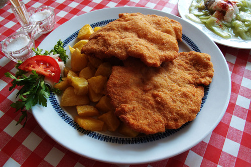

Heti étlap

hétfő
- Újházi tyúkhúsleves
- Sült csirkecomb, rizi-bizi
- Túró rudi

kedd
- Babgúlyás
- Mákos tészta
- Alma

szerda
- Ponty halászlé
- Rakott burgonya
- Szőlő

csütörtök
- Csontleves
- Bécsi szelet,sült burgonya
- Uborkasaláta

péntek
- Tojásleves
- Borsófőzelék,sült virsli
- Kókuszgolyó